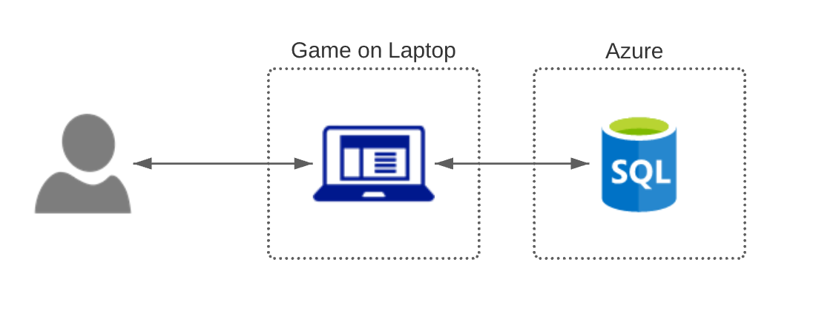

Rock Paper Scissors Lizard Spock is a console app game. Once launched, the user is prompted with a menu where he can choose between 3 options.
The original version of the game consisted of Rock, Paper, and Scissors. It was a basic if statement that compared the user input to the computer input and stated the winner. The newest version of the console app has added the following changes:
Initial architecture only included the user and the game. The new architecture now includes an Azure SQL database.
The player will chose an option from the main menu, which is a console game on the computer. The interaction with the database occurs after each round, where it saves the information of that current round to the table, and then when the player is calling it directly.
| Setting/Config | Value |
|---|---|
| Database | "marioserver.database.windows.net" |
| UserID | "mario" |
| Password | "MDP82712346!" |
| InitialCatalog | "marioDatabase" |
Main class of the program.
| Method | Function |
|---|---|
| Main | The main method that gets initialized when starting the game. Acts as the starting point to the application. |
This class is for all of the database code.
| Method | Function |
|---|---|
| SaveGameInformation | Takes in the choices of each player and the winner, creates the sql connection, and then saves the data by using the SaveData method. |
| SaveData | Creates the sql string that is used as the command to insert the data. |
| Stats | It uses a sql command to grab the information of the last 3 items on the table. |
| DisplayStats | It creates the table that is being displayed when the user chooses to display. |
| StringSubtraction | Creates the perfect length for the string for the formatting. |
| PlayerChoiceTableValue | Sets the number of spaces needed for player choices column of the table. |
| WinnerTableValue | Sets the number of spaces needed for the winner column of the table. |
This class is for all of the code that is outside of the Main method and the SqlClient class.
| Method | Function |
|---|---|
| MenuOptions | Decides which menu option the user chooses and what the outcome is. |
| ContinueGame | Uses the variable to decide whether or not the user wants to continue the game or not. |
| CheckPick | Converts the choice of the user into an integer. Then passes that and a random choice from the computer to the WinnerCheck method. |
| ComputerPick | Random number that is generated for the computer choice of the game. |
| WinnerCheck | Checks who won and returns the winner. |
| CheckOutcomeMessage | Checks whether or not the user won the game. There are different outcomes based on if the user won, lost, or tied. |
| InitialCatalog | "marioDatabase" |
Throughout this project, I have learned not only how to code basic programs in C#. But all of the logic behind using different functions, and how to be as efficient as possible while coding. During the process, there were a few code issues that we had to solve. Most of them were basic spelling or common issues that come with learning a new coding language. The biggest issue we had was an infinite loop in the SqlClient class that we are still trying to figure out what is causing it. For future projects, I think that I can work a little more before each code sync. Now that I have a basic understanding of C# and how to use methods, I think that I will be able to get more work done in less amount of time.
Some specific things I've learned from the yellowbook
| Method | Function |
|---|---|
| Methods (pg 48) | It contains all of the code of the game, methods are used to complete all of my actions. |
| Variables (pg 58) | They hold information to be used later, it allows the code to be simplified and organized. |
| Enumerated Type (pg 79) | I use Enum's to hold all of my game choices in it's own class. This allows me to call the choice based on the number it falls under in the list. |
| Strings and Concatting Strings | Due to this being a game, the strings and text is very important. It needs to be easy to read and look at. |
| GUIs | Like strings, the overall menu and look of the game needs to be easy to navigate. |
| Debugging | This process allows me to accuretly find out what is causing the program to fail. |
| Classes | This allows for more organization of my code. I have a class that includes all of my strings, a class that includes all of my SQL database code, and a class that holds the rest. |